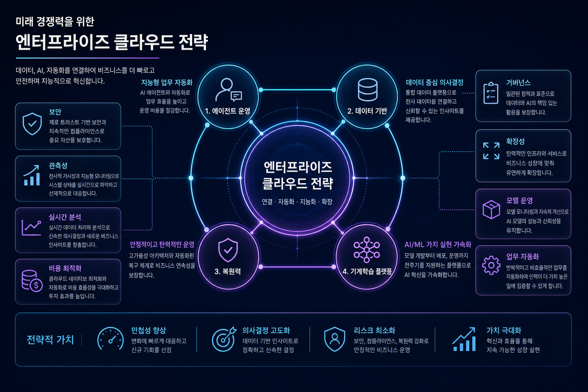
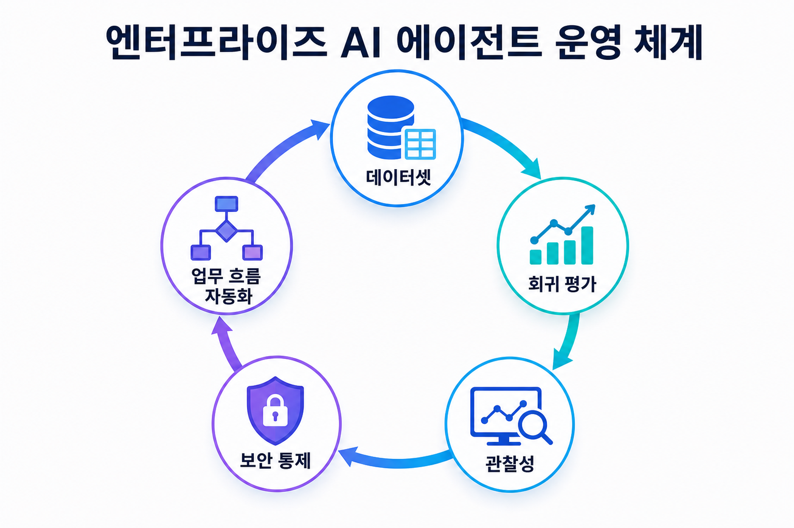
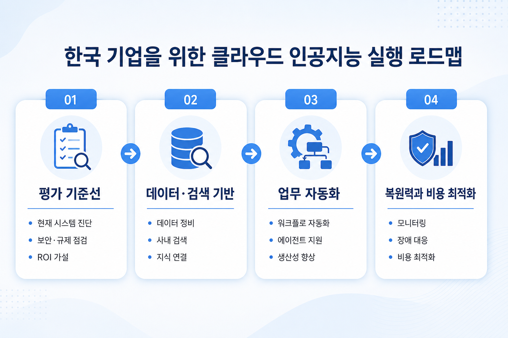

분산 학습을 위한 아마존웹서비스 고속 그래픽처리장치 통신 기술
대규모 분산 학습에서 그래픽처리장치 간 통신 경로와 제어 경로를 이해해야 비용과 처리량을 함께 최적화할 수 있다는 신호입니다.
원문 보기오늘 수집한 아마존웹서비스 블로그를 바탕으로, 한국 기업이 엔터프라이즈 인공지능·데이터·클라우드 전환에서 바로 점검해야 할 기술 변화와 실행 우선순위를 정리했습니다.

그림 1. 오늘의 기술 신호를 기업 실행 관점으로 재구성한 전략 지도
베드록 에이전트코어, 랭스미스 평가, 아마존 퀵 기반 업무 흐름은 에이전트를 단순 시연이 아니라 테스트 가능한 운영 체계로 다루기 시작했음을 보여줍니다.
오픈서치 서버리스 차세대 기능은 에이전트 애플리케이션의 검색·벡터 백엔드를 더 빠르고 탄력적인 기본 구성요소로 끌어올립니다.
세이지메이커 인공지능과 엠엘플로우 관련 글은 실험 추적, 포털 통합, 보안 프록시를 통해 개발자 경험과 통제 요구를 동시에 맞추려는 흐름을 보여줍니다.
그래픽처리장치 통신, 토크나이저, 커널 최적화는 모델 품질만큼 비용과 처리량을 좌우하는 전략 요소입니다.
오늘의 블로그 흐름은 생성형 인공지능이 개별 도구 도입 단계를 지나, 엔터프라이즈 운영 표준으로 편입되는 장면을 보여줍니다. 평가 기준선이 없는 에이전트는 배포 이후 품질을 설명하기 어렵고, 검색·벡터 기반이 불안정하면 답변 신뢰도도 흔들립니다.
따라서 한국 기업은 실험실 수준의 개념검증보다, 실패 사례를 데이터셋으로 남기고 회귀 평가로 잠그며, 서비스 복원력과 보안 감사를 같은 흐름에서 관리하는 체계를 우선해야 합니다.

그림 2. 에이전트 운영은 데이터셋, 평가, 관찰성, 보안 통제의 순환으로 관리해야 합니다.
| 영역 | 오늘의 신호 | 기업 적용 포인트 | 주의할 점 |
|---|---|---|---|
| 에이전트 평가 | 버전 관리된 데이터셋과 궤적 평가 | 실패 사례를 테스트 자산으로 전환 | 모델 판정만으로 품질을 단정하지 않기 |
| 검색 기반 | 서버리스 검색과 벡터 백엔드 강화 | 수요 변동이 큰 지식 검색에 탄력 구조 적용 | 권한, 색인 지연, 비용 상한 설계 필요 |
| 기계학습 운영 | 엠엘플로우 포털·프록시 통합 | 실험 추적을 사내 업무 포털에 내장 | 인증 위임과 감사 로그를 초기 설계에 포함 |
| 복원력 | 생성형 인공지능 기반 장애 모드 분석 | 업무 여정 기준으로 복원력 정책 수립 | 자동 권고를 실제 테스트로 검증 |
자금세탁방지, 품질 조사, 장애 대응처럼 절차가 반복되는 업무는 아마존 퀵 흐름과 모델 컨텍스트 프로토콜형 연결 패턴으로 자동화 후보를 선별할 수 있습니다.
저자원 언어 모델 학습 사례는 한국어 특화 도메인 모델에도 토크나이저와 커널 최적화가 경제성을 크게 바꿀 수 있음을 시사합니다.
조직 단위 복원력 보고와 정책 기반 평가 기능은 다계정·다조직 환경의 클라우드 거버넌스 자동화 요구와 맞닿아 있습니다.

그림 3. 한국 기업을 위한 단계별 실행 로드맵
비결정적 에이전트는 단일 실행 결과보다 반복 평가와 회귀 평가로 관리해야 합니다.
프록시와 포털 통합은 편리하지만 위임 권한, 세션 경계, 응용프로그램 인터페이스 감사 로그가 필수입니다.
서버리스와 고성능 그래픽처리장치 모두 자동 확장 편의성이 있으므로 예산 경보와 용량 상한이 필요합니다.
대규모 분산 학습에서 그래픽처리장치 간 통신 경로와 제어 경로를 이해해야 비용과 처리량을 함께 최적화할 수 있다는 신호입니다.
원문 보기복원력 정책, 의존성 발견, 장애 모드 분석을 생성형 인공지능으로 표준화해 조직 단위 신뢰성 관리를 강화하는 흐름입니다.
원문 보기검색과 벡터 저장소가 에이전트형 애플리케이션의 기본 운영 백엔드로 자리 잡으며 탄력 확장과 비용 절감이 강조됩니다.
원문 보기저자원 언어 모델도 토크나이저와 커널 최적화를 결합하면 같은 하드웨어에서 학습 효율과 문맥 활용도를 높일 수 있습니다.
원문 보기기계학습 실험 추적 화면을 사내 포털에 내장해 연구자 경험과 접근 통제를 동시에 맞추는 기업형 통합 패턴입니다.
원문 보기표준 보안 요구를 지키면서 관리형 기계학습 추적 서비스에 접근하도록 프록시 계층을 두는 현실적 통합 방식입니다.
원문 보기심층 에이전트는 최종 답변뿐 아니라 도구 호출 궤적, 중간 상태, 회귀 평가를 함께 봐야 운영 품질을 설명할 수 있습니다.
원문 보기에이전트 평가 데이터셋을 버전 관리해 운영 실패를 반복 가능한 테스트 자산으로 바꾸는 접근이 중요해지고 있습니다.
원문 보기고성능 추론 모델의 등장은 장시간 자율 작업, 코드 작업, 지식 종합을 기업 환경 안에서 확장하려는 수요를 보여줍니다.
원문 보기자금세탁방지 경보처럼 반복적인 조사 업무는 연결 표준과 업무 흐름 자동화를 통해 처리 시간을 크게 줄일 수 있습니다.
원문 보기| 번호 | 제목 | 로컬 파일 | 링크 |
|---|---|---|---|
| 1 | 분산 학습을 위한 아마존웹서비스 고속 그래픽처리장치 통신 기술 | 수집 문서 1 | 원문 |
| 2 | 생성형 인공지능 기반 사이트 신뢰성 엔지니어링을 위한 아마존웹서비스 복원력 허브 차세대 기능 | 수집 문서 2 | 원문 |
| 3 | 에이전트형 인공지능 애플리케이션을 위한 아마존 오픈서치 서버리스 차세대 기능 | 수집 문서 3 | 원문 |
| 4 | 아마존 세이지메이커 인공지능 기반 아제르바이잔어 모델 학습 | 수집 문서 4 | 원문 |
| 5 | 아마존 세이지메이커 인공지능 엠엘플로우 앱을 내장한 맞춤형 포털 구축 | 수집 문서 5 | 원문 |
| 6 | 응용프로그램 인터페이스 프록시로 아마존 세이지메이커 엠엘플로우 외부 접근 간소화 | 수집 문서 6 | 원문 |
| 7 | 아마존웹서비스에서 랭스미스로 심층 에이전트 평가하기 | 수집 문서 7 | 원문 |
| 8 | 아마존 베드록 에이전트코어 데이터셋 관리로 에이전트와 함께 성장하는 테스트 묶음 구축 | 수집 문서 8 | 원문 |
| 9 | 클로드 오퍼스 사점팔의 아마존웹서비스 제공 시작 | 수집 문서 9 | 원문 |
| 10 | 아마존 퀵과 스노우플레이크 코텍스 인공지능을 활용한 자금세탁방지 경보 분류 자동화 | 수집 문서 10 | 원문 |